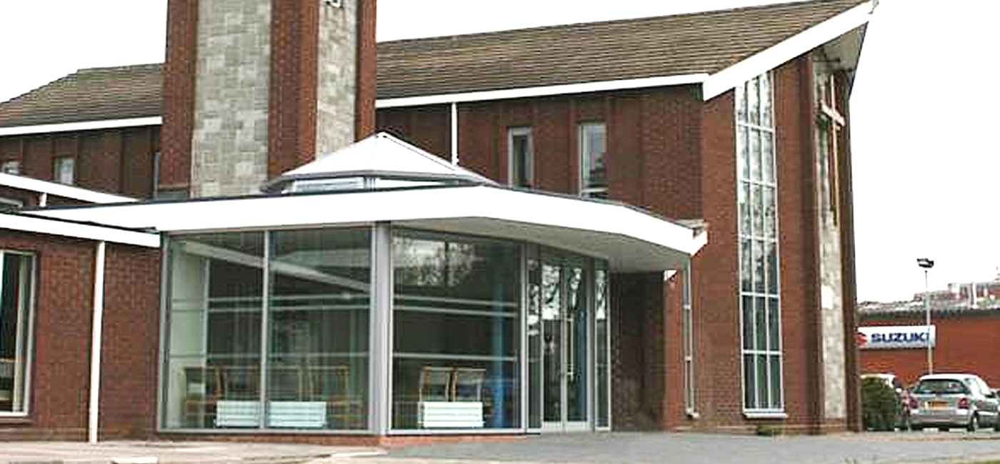

What We Do
Stone Ecclesiastical Ltd is a unique company working exclusively with church communities helping to find solutions to building needs whether it is for a new church re-ordering of existing premises, extensions and alterations, improving existing facilities to meet current legislation or dealing with structural and building defects.

About us...
Stone Ecclesiastical Ltd is a unique company working exclusively with church communities helping to find solutions to building needs whether it is for a new church re-ordering of existing premises, extensions and alterations, improving existing facilities to meet current legislation or dealing with structural and building defects.
As a company we have provided a comprehensive range of professional services and advice including Architectural Design, Building Surveying, Structural Engineering, Building Services, Cost Control, CDM Co-ordinator and Project Management.
Meet the team
Michael P Setter FCMI, MRICS, FCIOB, MAPS
Timothy Blatchford RIBA, MA Conservation Studies (York), AABC
Ken Dunn
Timothy Blatchford has been appointed as church architect for a number of churches in the Diocese of Bristol and Diocese of Gloucester and on the diocesan lists of approved inspecting architects and surveyors for the Diocese of Oxford, London and Exeter.
Project Management
Over many years we have found that our church clients prefer having to appoint one consultant who then carries the responsibility for all the professional aspects of the project.
This single source responsibility offers a single point of contact and at the same time provides economy in fee expenditure.
Additional benefits include a design team who are used to working together, understand each other and have unity of purpose.
We firmly believe that working in partnership with our church clients a thorough understanding is gained of their needs resulting in a successful project that all are proud of when completed.